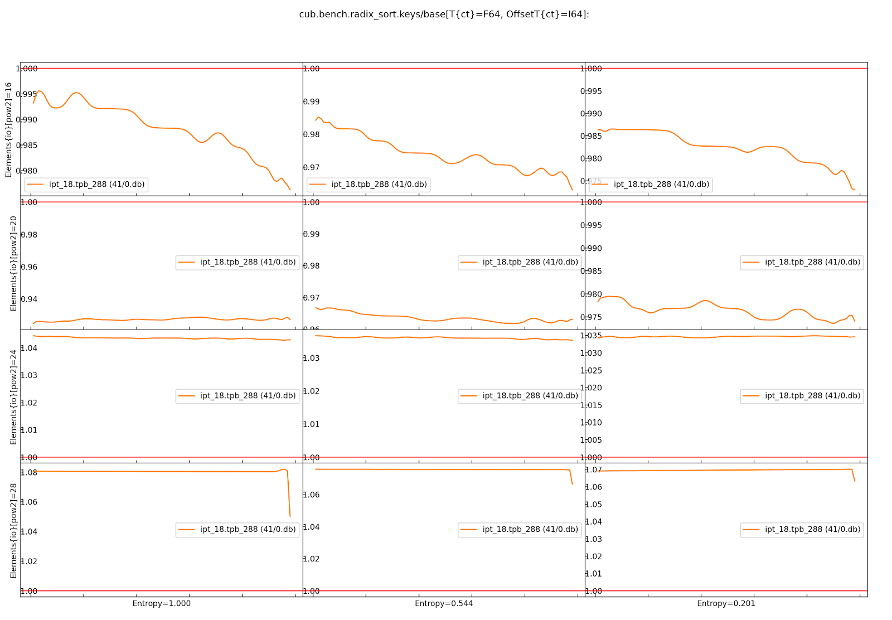

CUB Tunings
The following is an analytical guide on how to tune CUB Device primitives for performance.
Device-scope algorithms in CUB have many knobs that significantly impact performance (without affecting correctness). For instance, the number of threads per block and items per thread can be tuned to maximize performance for a given device and data type. This document describes CUB’s tuning Infrastructure, a set of tools facilitating the process of selecting optimal tuning parameters for a given device and data type.
Terminology
We omit the word “tuning” but assume it in the definitions for all terms below, so those terms may mean something else in a more generic context.
The following three terms are fundamental to understanding the essence of CUB tuning:
compile-time (ct) workload: a workload that can be recognized only at compile time.
e.g. the combination of key type and offset type, int16_t and int32_t
runtime (rt) workload: a workload that can be recognized only at runtime.
e.g. the number of input elements
tuning parameter (or parameter): a parameter that can be tuned to maximize performance for a given device and data type.
e.g. number of threads per block, items per thread
Algorithms are tuned for different workloads. These workloads are defined as subspaces by NVBench via the benchmarks’ axis. For instance, radix sort can be tuned for different key types, different number of keys, and different distributions of keys. The tuning process is summarized in the following statement:
More specifically, the tuning infrastructure optimizes algorithms for specific compile-time workloads, aggregating results across all runtime workloads. It searches through a space of parameters to find the combination for a given compile-time workload with the highest score.
Following is supplemental terminology that will be used throughout the rest of this tuning guide:
Parameter Space: the set of all possible values for a given Tuning Parameter.
It is specific to the algorithm. For example the parameter space for the number of threads per block can be \(\{32, 64, 96, 128, \dots, 1024\}\) for radix sort, but \(\{32, 64, 128, 256, 512\}\) for merge sort.
Search Space: Cartesian product of all the Parameter Spaces of a single algorithm.
For instance, the Search Space for an algorithm with tunable items per thread and threads per block might look like \(\{(ipt \times tpb) | ipt \in \{1, \dots, 25\} \text{and} tpb \in \{32, 64, 96, 128, \dots, 1024\}\}\).
Variant - a point in the corresponding Search Space.
Base - the variant that CUB uses by default.
Score - a single number representing the performance for a given compile-time workload across all runtime workloads. For instance, a weighted-sum of speedups of a given variant compared to its base for all runtime workloads is a score.
Search Process
During the Search Process we are covering all variants for all compile-time workloads to find a variant with a maximum (at least locally) score.
To get started with tuning, you need to configure CMake. You can use the following command:
$ mkdir build
$ cd build
$ cmake .. --preset=cub-tune
You can then run the tuning search for a specific algorithm and compile-time workload. We use a CCCL internal script for that:
$ ../benchmarks/scripts/search.py -R '.*merge_sort.*pairs' -a 'KeyT{ct}=I128' -a 'Elements{io}[pow2]=28'
cub.bench.merge_sort.pairs.trp_0.ld_1.ipt_13.tpb_6 0.6805093269929858
cub.bench.merge_sort.pairs.trp_0.ld_1.ipt_11.tpb_10 1.0774560502969677
...
This will search the space of merge sort for key-value pairs, for the key type int128_t on 2^28 elements.
The -R and -a options are optional. If not specified, all benchmarks are going to be tuned.
The -R option can select multiple benchmarks using a regular expression.
For the axis option -a, you can also specify a range of values like -a 'KeyT{ct}=[I32,I64]'.
Any axis values not supported by a selected benchmark will be ignored.
The first variant cub.bench.merge_sort.pairs.trp_0.ld_1.ipt_13.tpb_6 has a score <1 and is thus generally slower than the baseline,
whereas the second variant cub.bench.merge_sort.pairs.trp_0.ld_1.ipt_11.tpb_10 has a score of >1 and is thus an improvement over the baseline.
Warning
Notice there is currently a limitation in search.py
which will only execute runs for the first axis value for each axis
(independently of whether the axis is specified on the command line or not).
Tuning for multiple axis values requires multiple runs of search.py.
Please see this issue for more information.
Benchmarks do not need to be built a priori. The tuning framework will handle building the benchmarks (base and variants) and running them by itself. It will keep track of the build time for base and variants. Sometimes, a tuning variant may lead the compiler to hang or take exceptionally long to compile. To keep the tuning process going, if the build time of a variant exceeds a threshold, the build is cancelled. The same applies to benchmarks running for too long.
To get quick feedback on what benchmarks are selected and how big the search space is,
you can add the -l option:
$ ../benchmarks/scripts/search.py -R '.*merge_sort.*pairs' -a 'KeyT{ct}=I128' -a 'Elements{io}[pow2]=28' -l
ctk: 12.6.85
cccl: v2.7.0
### Benchmarks
* `cub.bench.merge_sort.pairs`: 540 variants:
* `trp`: (0, 2, 1)
* `ld`: (0, 3, 1)
* `ipt`: (7, 25, 1)
* `tpb`: (6, 11, 1)
It will list all selected benchmarks as well as the total number of variants (the magnitude of the search space) as a result of the Cartesian product of all its tuning parameter spaces.
The tuning infrastructure stores the results in an SQLite database called cccl_meta_bench.db in the build directory.
This database persists across tuning runs.
If you interrupt the benchmark script and then launch it again, only missing benchmark variants will be run.
Tuning on multiple GPUs
Because the search process computes scores by comparing the performance of a variant to the baseline,
it has to store the baseline result in the tuning database.
The baseline is specific to the physical GPU on which it was obtained.
Therefore, a single tuning database should not be used to run the tuning search on two different GPUs, even of the same architecture.
Similarly, you should also not interrupt the search and resume it on a different GPU.
Be careful when sharing build directories over network file systems.
Check whether a build directory already contains a cccl_meta_bench.db from a previous run before starting a new search.
Because the search space can be separated based on different axis values,
a tuning search can be run on multiple GPUs in parallel, even across multiple physical machines (e.g., on a cluster).
To do this, search.py is invoked in parallel, one invocation/process per GPU,
with different axis values specified for each invocation.
A dedicated tuning database will be created per physical GPU.
If a shared filesystem is in use, make sure that search.py is run from different directories,
so the cccl_meta_bench.db files are placed into distinct paths.
It is recommended to drive a multi-GPU/multi-node search process from a script,
iterating the axis values and invoking search.py for each variant.
This integrates nicely with workload managers on clusters, which allow submitting batch jobs.
In such a scenario, it is recommended to submit a job per variant.
After tuning on multiple GPUs, the results are available in multiple tuning databases, which can be analyzed together.
Analyzing the results
The result of the search is stored in one or more cccl_meta_bench.db files. To analyze the
result you can use the analyze.py script.
The --coverage flag will show the amount of variants that were covered per compile-time workload:
$ ../benchmarks/scripts/analyze.py --coverage
cub.bench.radix_sort.keys[T{ct}=I8, OffsetT{ct}=I32] coverage: 167 / 522 (31.9923%)
cub.bench.radix_sort.keys[T{ct}=I8, OffsetT{ct}=I64] coverage: 152 / 522 (29.1188%)
The --top N flag will list the best N variants for each compile-time workload:
$ ../benchmarks/scripts/analyze.py --top=5
cub.bench.radix_sort.keys[T{ct}=I8, OffsetT{ct}=I32]:
variant score mins means maxs
97 ipt_19.tpb_512 1.141015 1.039052 1.243448 1.679558
84 ipt_18.tpb_512 1.136463 1.030434 1.245825 1.668038
68 ipt_17.tpb_512 1.132696 1.020470 1.250665 1.688889
41 ipt_15.tpb_576 1.124077 1.011560 1.245011 1.722379
52 ipt_16.tpb_512 1.121044 0.995238 1.252378 1.717514
cub.bench.radix_sort.keys[T{ct}=I8, OffsetT{ct}=I64]:
variant score mins means maxs
71 ipt_19.tpb_512 1.250941 1.155738 1.321665 1.647868
86 ipt_20.tpb_512 1.250840 1.128940 1.308591 1.612382
55 ipt_17.tpb_512 1.244399 1.152033 1.327424 1.692091
98 ipt_21.tpb_448 1.231045 1.152798 1.298332 1.621110
85 ipt_20.tpb_480 1.229382 1.135447 1.294937 1.631225
The name of the variant contains the short parameter names and values used for the variant. For each variant, a score is reported. The base has a score of 1.0, so each score higher than 1.0 is an improvement over the base. However, because a single variant contains multiple runtime workloads, also the minimum, mean, maximum score is reported. If all those three values are larger than 1.0, the variant is strictly better than the base. If only the mean or max are larger than 1.0, the variant may perform better in most runtime workloads, but regress in others. This information can be used to change the existing tuning policies in CUB. A detailed explanation of the output is presented in the following image:

By default, analyze.py will look for a file named cccl_meta_bench.db in the current directory.
If the tuning results are available in multiple databases, e.g., after tuning on multiple GPUs,
glob expressions matching multiple databases, or just multiple file paths, can be passed as arguments as well:
$ ../benchmarks/scripts/analyze.py --top=5 <path-to-databases>/*.db
In case the tuning database(s) store(s) results for several different benchmarks,
the analysis can again be restricted using a regular expression via the -R option:
$ ../benchmarks/scripts/analyze.py -R=".*radix_sort.keys.*" --top=5 <path-to-databases>/*.db
Variant plots
The reported score for a tuning aggregates the performance across all runtime workloads. Furthermore, NVBench collects and aggregates multiple samples for a single compile and runtime workload. So, even though the min, mean and max score are reported for a variant, it may be necessary to compare the distributions of raw speedups between the baseline and a variant across all runtime workloads and samples. This is achieved using variant plots. For more background information on this subject, we refer the reader to this article.
A variant plot can be generated for one or more variants using the --variants-ratio= option and specifying the specific variant to plot.
For example:
$ ../benchmarks/scripts/analyze.py -R=".*radix_sort.keys.*" --variants-ratio='ipt_18.tpb_288' <path-to-databases>/*.db
May display a matrix of variant plots like:

In the image above we see twelve diagrams for the Cartesian product of the Entropy (horizontally) and Elements{io} (vertically) runtime axes.
The compile-time axes are fixed for one matrix of variant plots.
Across each variant plot’s x-axis, the speedup over the baseline (y-axis) is represented.
The baseline is shown as a straight horizontal red line at 1.
The found tuning thus results in a slowdown for Elements{io} 2^16 and 2^20 (orange line below red baseline),
but a speedup for 2^24 and 2^28 (orange line above red baseline).
In general, bigger axis values for plots for importance-ordered axes, like Elements{io},
should be prioritized in evaluating a given tuning, because GPUs are optimized for large problem sizes.
However, while the almost 4% slowdown for 2^16 elements at entropy 0.544 may be bearable,
a close to 7% slowdown for 2^20 elements at entropy 1 is probably too large to accept this tuning,
despite the solid 3.5-8% speedup for larger element counts.
The shown ratios are generated by fitting an equal amount of quantiles into the samples of the baseline and the variant, and then showing the quotient for each corresponding quantile from baseline and variant. For background information on the quantile-respectful density estimation, we refer the reader to this article. By default, a quantile corresponds to a percentile, and thus a ratio plot contains 100 data points expressing the speedup of the slowest 1% in the variant over the slowest 1% in the baseline (left), then the second slowest 1%, etc., until the speedup of the fastest 1% in the variant over the fastest 1% in the baseline (right).
The detailed analysis via variant plots is needed, because a single aggregated score cannot represent the distribution of samples obtained from highly concurrent algorithms, such as those in CUB. Even though NVBench reruns a benchmark many times to gain statistical confidence in the result, the runtime of a CUB algorithm does not necessarily follow a normal distribution. For example, the concurrent nature of some algorithms may result in bimodal or even more complex distributions, as a consequence of how the hardware schedules and executes threads. Also, the kind of distribution may be different between baseline and variant. For all these reasons, comparing the distribution of samples is the only reliable way to determine, whether a tuning provides a consistent speedup for all runtime workloads.
Creating tuning policies
Once a suitable tuning result has been selected, we have to translate it into C++ code that will be picked up by CUB.
The tuning variant name shown by analyze.py gives us all the information on the selected tuning values.
Here is an example:
$ ../benchmarks/scripts/analyze.py --top=1
cub.bench.radix_sort.keys[T{ct}=I8, OffsetT{ct}=I64]:
variant score mins means maxs
71 ipt_19.tpb_512 1.250941 1.155738 1.321665 1.647868
Assume we have determined this tuning to be the best one for sorting I8 keys using radix_sort using I64 offsets.
The variant can be decoded using the // %RANGE% comments in the C++ source code of the benchmark,
since the names of the reported parameters in the variant are derived from these:
// %RANGE% TUNE_ITEMS_PER_THREAD ipt 7:24:1
// %RANGE% TUNE_THREADS_PER_BLOCK tpb 128:1024:32
The variant ipt_19.tpb_512, which stands for 19 items per thread (ipt) and 512 threads per block (tpb),
was thus compiled with -DTUNE_ITEMS_PER_THREAD=19 -DTUNE_THREADS_PER_BLOCK=512.
The meaning of these values is specific to the benchmark definition,
and we have to check the benchmark’s source code for how they are applied.
Equally named tuning parameters may not translate to different benchmarks (please double check).
These tuning parameters are then typically used to create a policy hub,
which is passed to the algorithm’s dispatcher, as sketched above,
and repeated here:
#if !TUNE_BASE
template <typename AccumT, typename OffsetT>
struct policy_hub_t {
struct MaxPolicy : cub::ChainedPolicy<300, policy_t, policy_t> {
static constexpr int threads_per_block = TUNE_THREADS_PER_BLOCK;
static constexpr int items_per_thread = TUNE_ITEMS_PER_THREAD;
using AlgorithmPolicy = AgentAlgorithmPolicy<threads_per_block, items_per_thread, ...>;
};
#endif
The tunings defined in CUB’s source are similar. However, they take predefined tuning values based on the template arguments of a CUB algorithm to build an agent policy for the policy hub. The way tuning values are selected is different for each CUB algorithm and requires studying the corresponding code. The general principles of the policy hub and tunings are documented in the CUB device layer documentation. There is typically a tuning class template specialization per variant or group of variants and per PTX version. For example, signed and unsigned integers of the same size are often represented by the same tuning. In general, variants for which the algorithmic behavior is expected to be the same (same arithmetic intensity, no special instructions for one of the data types, same amount of bytes to load/store, etc.) are covered by the same tuning.
When new tuning values have been found and an existing tuning specialization exists for this variant, the tuning values can simply be updated in the corresponding CUB tuning header. This is usually the case when a CUB algorithm has been reengineered and shows different performance characteristics, or more tuning parameters are exposed (e.g., a new load algorithm is available). For example, this existing radix sort tuning may exist:
template <typename ValueT, size_t KeySize, size_t ValueSize, size_t OffsetSize>
struct sm100_small_key_tuning : sm90_small_key_tuning<KeySize, ValueSize, OffsetSize> {};
...
template <typename ValueT>
struct sm100_small_key_tuning<ValueT, 1, 0, 8> {
static constexpr int threads = 256; // better value from tuning analysis: 512
static constexpr int items = 14; // better value from tuning analysis: 19
};
The template specialization applies when sorting 1-byte keys without values 8-byte offsets. However, the concrete value type is disregarded. Since we have found that 512 threads per block and 19 items per thread is better, we can update the values in place.
A different case is when we tune beyond what’s currently supported by CUB’s existing tunings. This may be because we tune for a new hardware architecture, in which case a new tuning class template and specializations should be added. Or we tune for new key, value or offset types, etc., in which case the existing policy hub and tuning class templates may need to be extended. There is no general rule on how this extension is done, though.
In the seldom case, that no tuning better than the existing one (baseline) has been found, it must be ensured that either the old tuning values are replicated in the new tuning specialization, or the new tuning specialization defers to the old one, or the tuning selection mechanism falls back accordingly. There is no general rule on how this is implemented.
Verification
Once we have selected tunings and implemented them in CUB, we need to verify them. This process consists of two steps.
Firstly, we need to ensure that adding new tunings and policies did not break existing tunings. This is most relevant when tunings for new PTX versions have been added. To verify this, compile the corresponding benchmarks for the previous architecture (excluding the new tunings) before and after modifying any tunings, and compare the generated SASS :code:(cuobjdump -sass). It should not have changed.
Secondly, we must benchmark and compare the performance of the tuned algorithm before and after the tunings have been applied. This extra step is needed, because the score shown during the tuning analysis is just an aggregated result. Individual benchmarks may still have regressed for some compile-time workloads. Fortunately, this is no different than running the corresponding CUB benchmark with and without the changes, and comparing the resulting JSON files. Such a diff should be supplied to any request to change CUB tunings.
If verification fails for some compile-time workloads (there are regressions), there are two options:
Discard the tuning entirely and ensure the tuning selection falls back to the baseline tuning.
Narrow down the tuning template specialization to only apply to the workloads where it improves performance, and fallback where it regressed.
The latter is more complex and may not be justified, if the improvements are small or the use case too narrow. Use your judgement. Good luck!